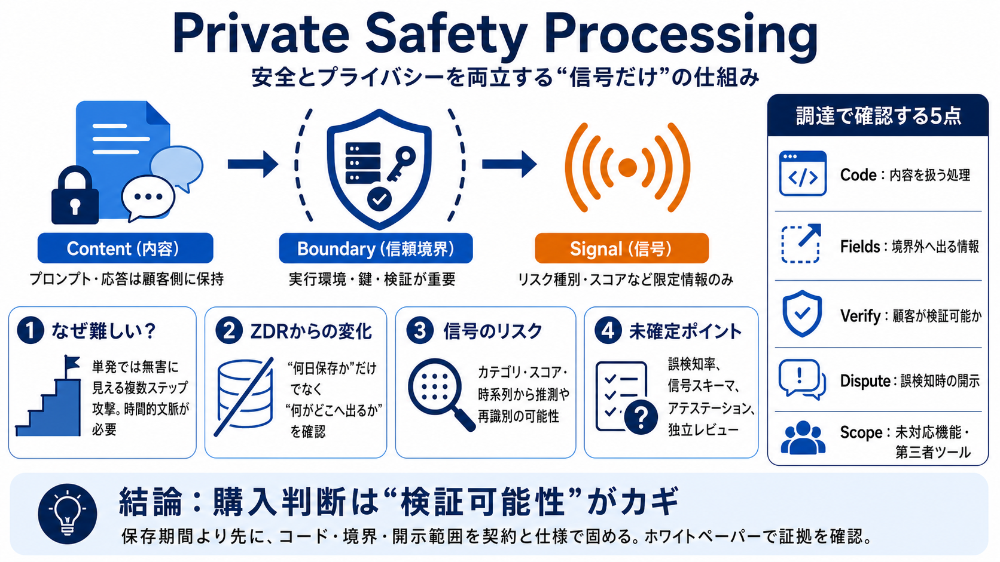

Offering Zero Data Retention for frontier models
We will continue working with customers on the technical and operational details of our approach. We plan to start rolli…

We will continue working with customers on the technical and operational details of our approach. We plan to start rolli…
## OpenAI is testing a privacy-focused safety system that preserves zero data retention, while Anthropic has introduced …
The company previewed Private Safety Processing, a technical architecture that promises to run safety checks on API inpu…
OpenAI tests zero-retention safety system as Anthropic moves to 30-day data retention OpenAI is reviewing a new techniq…
## Generating... AI Summary OpenAI has unveiled a new safety system aimed at monitoring AI misuse without storing enterp…